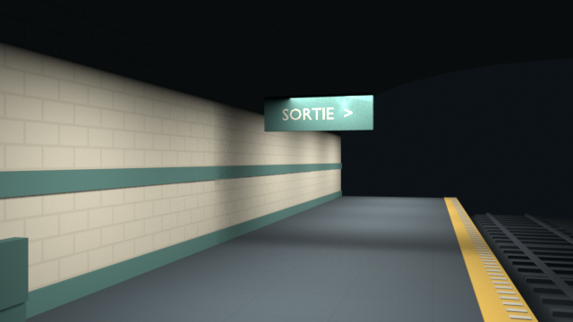
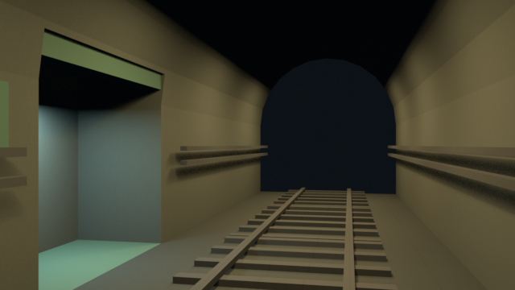
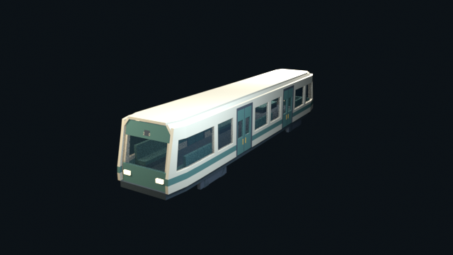
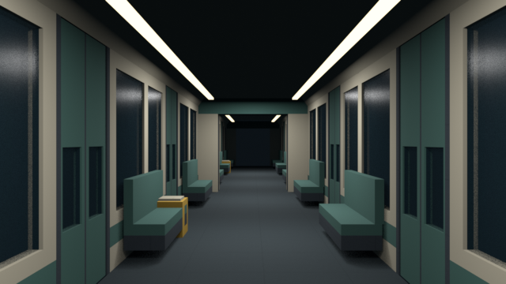
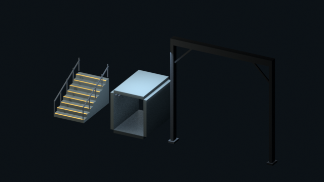
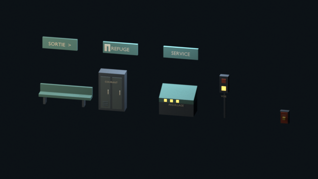
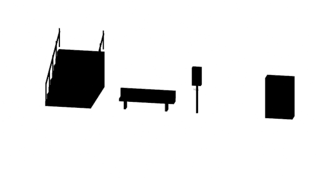
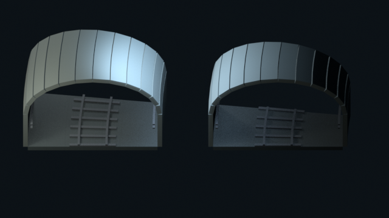

01 / Station publique
Carrelage ivoire, frise pétrole, voûte de 18 m et bande de quai. Échantillon ouvert de 24 m.
La station garde sa clarté. Le service devient industriel. La rame de fret laisse une allée pour se battre.
Rendus Blender à 640 × 360 ; le rendu du jeu et les collisions seront confrontés à la pièce pilote N4.

Carrelage ivoire, frise pétrole, voûte de 18 m et bande de quai. Échantillon ouvert de 24 m.

Tube de 4,5 m, rails et câbles. Niche de 3 × 1,5 m en dehors du gabarit de passage.

15 × 2,8 × 3,2 m. Nez resserré, pare-brise incliné, toit à pans et deux phares.

Deux voitures fixes montrées ici. Fenêtres vitrées, sièges latéraux, intercirculation de 2,25 m.

Escalier à marches de 0,25 m, galerie de service et charpente de dépôt.

Banc, armoire, pupitre, signal, arrêt d’urgence et panneaux originaux.

Contrôle des formes : escalier, banc, signal et armoire.

R32 à gauche, R24 à droite. Sections de 7,5° élargies à 7 m, raccordées en N5 au plan.
La voûte et le carrelage, la face vitrée, puis la vue traversante. Les photos restent distantes et créditées ; aucune ne devient une texture du kit.